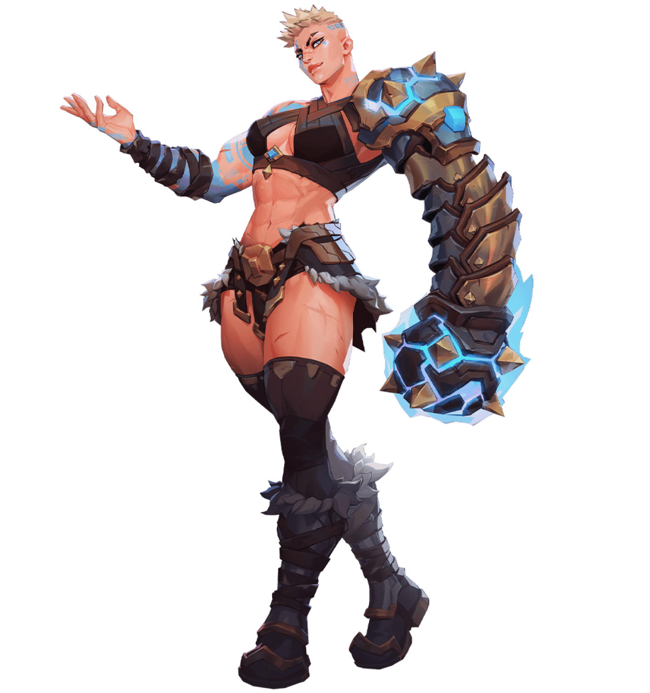
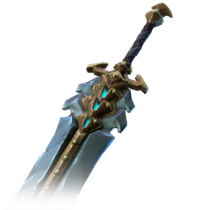

Senja
Descrição:
A última iniciada das mortais Irmãs de Ferro, Senja era a adorada campeã da arena imperial. Em um mundo partido pela Tênebra, ela escolheu lutar pelos Rastreadores. Senja está sempre procurando por desafios maiores, e ela quer destruir os Preccursores pessoalmente.
Senja é uma poderosa Warmaster(Mestre de Guerra) cujos golpes são como raios, e seus punhos blindados esmagam os inimigos. Ela é motivada por uma torcida que só ela consegue ouvir, e seu poder é alimentado por performances grandiosas.
| Senja | |
|---|---|
| The Champion | |
|  | |
| Classe | Warmaster | Arma Assinatura |  Colosso |